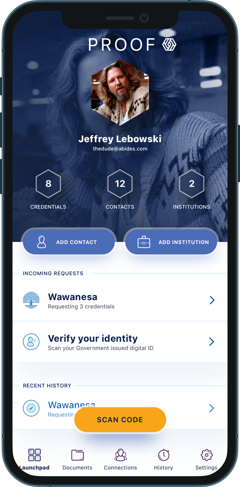
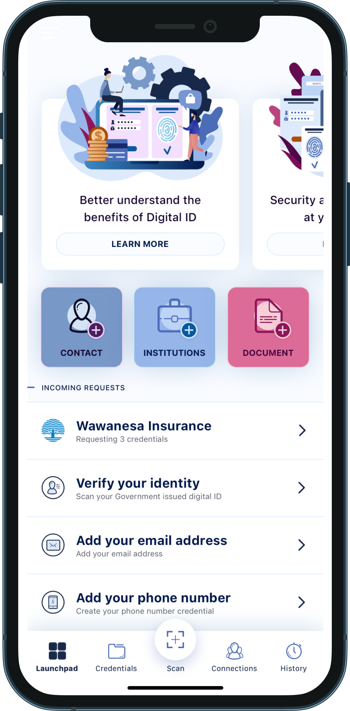
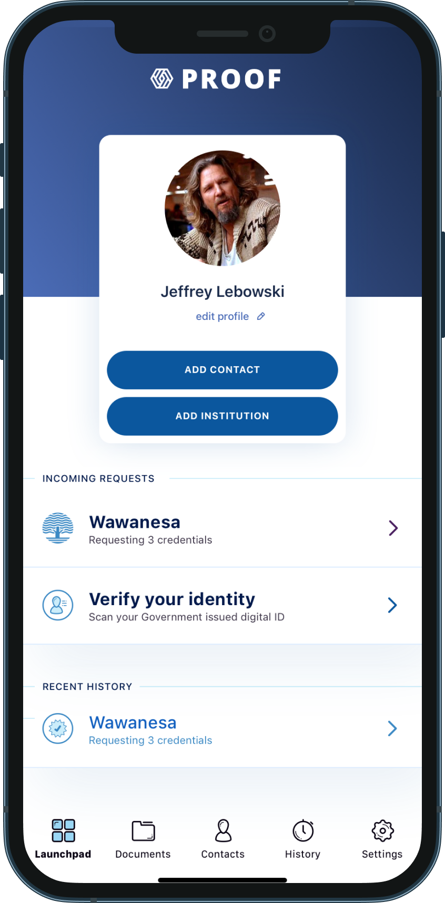
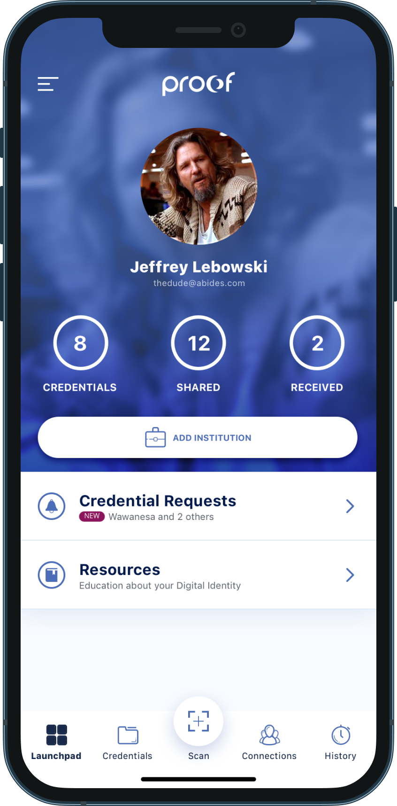

Proof Digital Identity
Sharing sensitive information only works when people understand what they're sharing.
An MVP for secure, deliberate sharing.
- Focus
- MVP
- Cross-platform design system
- Scope
- iOS
- Android
- Context
- Paused before launch